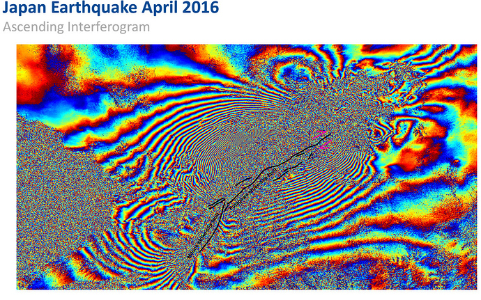
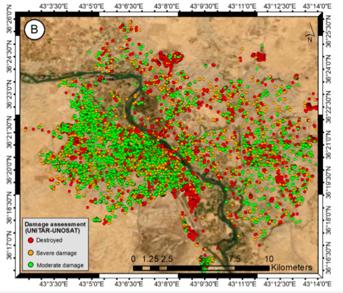
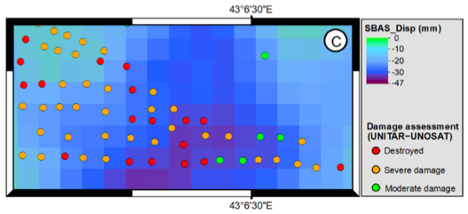
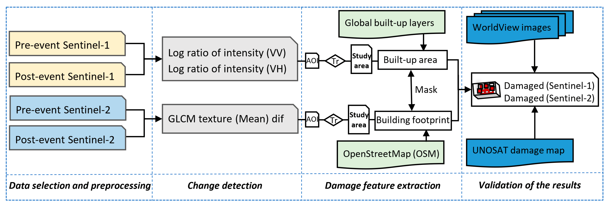
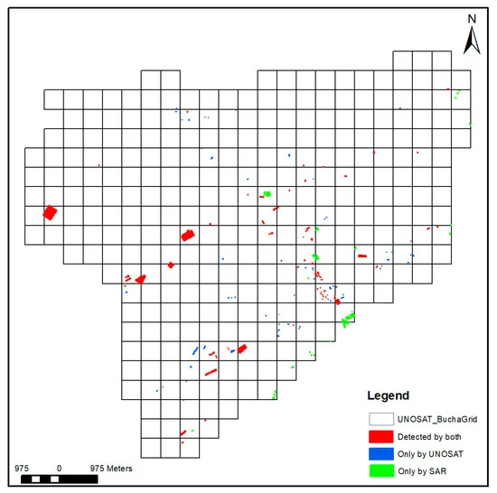
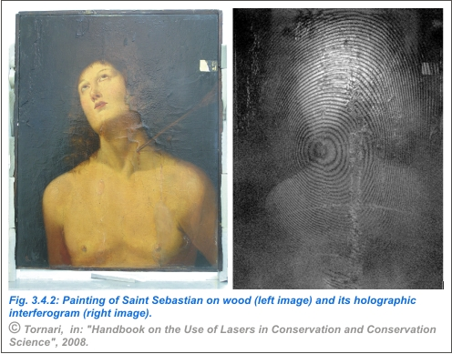

8 SAR
8.1 Summary
This week we pivoted from passive optical images to another type of remote sensing; synthetic aperture radar aka SAR! SAR sensors produce their own energy and then record the amount of that energy reflected back after interacting with the Earth, requiring a unique way of interpreting the data as the signal obtained is responsible to surface characteristics like topography and moisture. To summarise this week’s content I returned to a handwritten approach (as used in weeks 1 and 3) which is pictured below.

The key things to remember from this week’s content serve as the subheadings in the above mind map. I was particularly excited to finally experience that penny-drop feeling when realising that several papers I had read over the past few weeks had utilised SAR data, celebrating its strengths over optical data for certain applications (specifically for night-time monitoring + observations over frequently cloudy study sites). That was probably what I found most interesting from this week’s content - understanding the humongous potential for observation when using a combination of both passive and active sensor data in research! That, and of course discussion of interferometry. Having worked on a 2-man interferometry team at a job I had in London last summer, I think I’ll be forever amazed by not only the power it holds for obtaining incredibly precise ground measurements, but also by the crazy rainbow appearance of an inteferogram.

8.2 Applications
Combining my interest in InSAR with the fascinating discussion of Ollie Ballinger’s work on detecting building damage in conflict affected areas, I have decided to dedicate this applications section to exploring this line of research more thoroughly. As my dissertation is focusing on predicting terrorism + associated conflict risk, I was really excited to delve into the topic more!
The first paper that I came across outlined the work that Boloorani et al.,2021 had done using InSAR to map post-war urban damage in Mosul, Iraq. They sought to assess the feasibility of implementing InSAR techniques on Sentinel-1 data to estimate post-war damage as an alternative to using commerical high-res optical imagery. What I thought was really curious about this paper was that they assessed their outputs to a UN (UNITAR) damage map that had been commissioned by the Iraqi government after the Battle of Mosul in 2016-2017 - a map that had been generated using a combination of data sources including drone imagery, satellite images and field visits to create a post-war damage map.

What this meant was that the discussion of the study’s successes/accuracy hinged almost entirely on comparison between study outputs and the above UN map. Before I launch into a critique of this, I do want to confess that I really liked the way in which they tested + graphically presented the comparison between the two - it seems really intuitive to me which is a nice break from the sometimes unintelligible analysis that I see in similar papers using InSAR techniques.

Reading the discussion section of this paper, I couldn’t shake what Ollie said out of my mind. He spoke about how often, in the case of machine learning + remote sensing research, the results of accuracy assessments were disorted as overfitting was prevalent, thereby preventing opportunities to re-use a method in a new study location. It feels as though a similar issue affects this research. What would happen if they ran the same processes on say, Yemen, if there were no maps to support cross comparison? It seems to me at least, that there would be no proper way to assess the accuracy of outputs. Not only that, but the way that the discussion section is written suggests that strong prior ground knowledge of the war is important in interpretation efforts. This left me feeling ever so slightly frustrated, as I feel like I got lured in with a snappy title, a slick abstract and a series of interesting looking maps. It’s only at the end of the paper that the authors admit that whilst InSAR can capture damage, it’s probably only really useful when integrated with other data sources like the UN map. Even more than that, they also describe failings of the technique to detect a sudden decrease in building height and a strong reliance on ground data - a luxury often impossible in conflict-affected areas. Undoutbedly, the final line of the paper rings true: ‘This could be an issue to be followed in future research’.
In some of the ways in which Boloorani et al.,2021 went wrong, I believe Aimaiti et al. 2022 built upon and improved. They sought to assess building damage caused by war in Ukraine using Sentinel-1 SAR data and Sentinel-2 optical images, comparing their results to a UN Satellite Centre (UNOSAT) damage assessment map. Right off the bat, the authors acknowledge the problems acquiring ground truth data in the ongoing war zone, describing how for this reason their accuracy assessments are twofold, both qualitative and quantitative. These assessments are integrated into the study’s methodology and are frequently referred back to throughout the text, demonstrating the authors awareness of the study’s inherent limitations.

Also unlike Boloorani et al.,2021’s paper, Aimaiti et al. 2022 provide much more specific + detailed information about the steps they took throughout their methodology which is nice to see as all too often I feel like I read papers that I have 0 chance of recreating myself due to the lack of processing information.
In terms of results, Aimaiti et al. 2022 obtained some slightly confusing outputs - there were a few locations where damage detected by Sentinel-1 contradicted results from Sentinel-2. Broadly however, they found that the contribution to damage classification by either data type depended on the scale at which change was assessed; S1 showed small to large scale damaged buildings, while optical texture-based analysis mainly showed the large-scale damaged buildings. Similar to Boloorani et al.,2021, they presented their findings relative to the UN map in a simple graphical format.

Overall, I preferred this paper for several reasons. Besides those already mentioned, I feel as though this was written in a more self-aware way; by that, I mean that rather than selling the dream of a valuable methodology for detecting building damage in conflict afflicted areas and then admitting to falling short within the final few lines of the discussion section, Aimaiti et al. 2022 are more critical and display a greater consciousness of the challenges inherent to this task throughout. Moreover, I really like the way that they integrate both active and passive remotely sensed data into their analysis, as this makes results more robust. Finally, I like the direction in which they suggest future research to be aimed, describing a keen interest to ‘extend the framework to detect other war related damages, such as damages to agricultural sectors, and road/infrastructure non-building damages’.
All in all, I think that both of these papers clearly demonstrate both the case that Ollie was making in the lecture and the discussion of accuracy assessments from the week prior - in all contexts, there are challenges to assessing the accuracy and success of a technique in making detailed observations from space. But moreso than any other context, when conflict is affecting an area this becomes even more challenging. This remains a fertile and incredibly pressing area of research which will only benefit from more work being conducted.
Unrelated to all of this but something cool that I saw when doing some reading was about the use of interferometry in art restoration. Turns out it’s a technique that is used quite widely by restoration specialists in detecting where otherwise invisible defects are in paintings. It is increasingly becoming a vital structural diagnosis tool and supports conservation efforts.

From art to conflict studies, interferometry has us all covered!
8.3 Reflections
I really really loved this week’s content - in fact, I’d actually say that of all the weeks, this has been my favourite. It really felt like a lot of the things we had been discussing came together in one, especially when using conflict and war as the lens to consider the content through. Currently, I’m planning on creating a spatial risk map of terrorism in Nigeria for my dissertation using a Bayesian framework. However after this week, I’m strongly considering pivoting my research to include remotely sensed data to see whether or not this could be a valuable input in my risk analysis. I truly believe this is an incredibly important area of research and I look forward to seeing Ollie’s paper get published as his lecture really stuck with me.
I also wanted to briefly mention how much I’ve enjoyed this assessment style. To avoid sounding like I’m begging for a better mark through praise, it has been really nice to have the opportunity to really engage with published literature and see how the concepts that we get taught in a theoretical way can be used actively in really interesting/diverse fields. I really feel as though I’ve come a long way from week 1 in terms of the way I engage with and critique the literature that I come across. In the past I’d always felt hesitant to say anything that wasn’t complimentary about published work, as it felt a bit rich given that it wasn’t like I knew how to do what the authors did. Having now fully learnt about sensors, methods and even having trialed them myself during the practicals, I feel much more confident overall about my understanding and my opinions. It’s cool - I think this is actually something that will stay with me from here on out. Cheers CASA.
So that concludes my learning diary! I hope you’ve enjoyed it - I definitely have!
8.4 References
- Aimaiti, Y., Sanon, C., Koch, M., Baise, L.G., Moaveni, B. (2022) ‘War related building damage assessment in Kyiv, Ukraine, using Sentinel-1 radar and Sentinel-2 optical images’. Remote Sensing, vol. 14, is. 24.
- Boloorani, A.D., Darvishi, M., Weng, Q., Liu, X. (2021) ‘Post-war Urban Damage Mapping Using InSAR: The Case of Mosul City in Iraq’. ISPRS Int. J. Geo-Inf., vol. 10, is. 3.
- Tornari, V. (2008) ‘Handbook on the use of lasers in conservation and conservation science’. COST Office: Warsaw.
- vin15carter via STEP Forum (2017) ‘Interferogram and displacement comparison between SNAP and DIAPASON in GEP’. Web page, available at: https://forum.step.esa.int/t/interferogram-and-displacement-comparison-between-snap-and-diapason-in-gep/5750